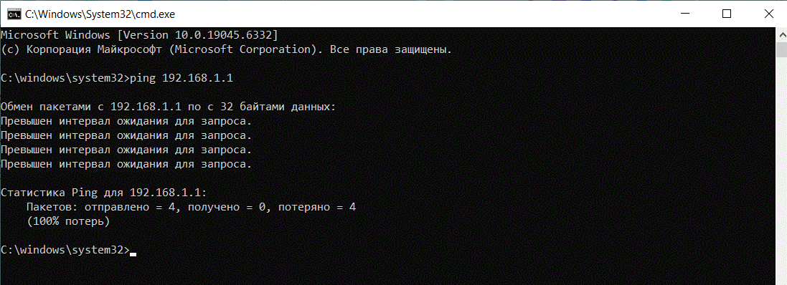
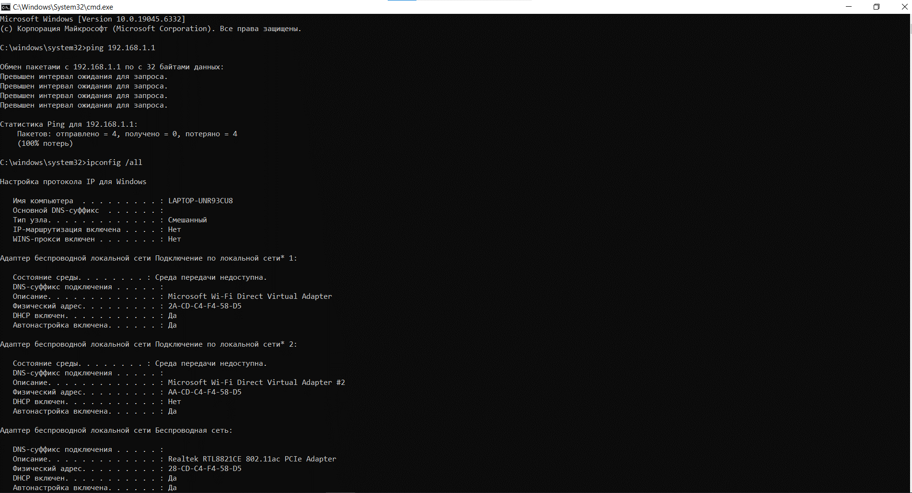

Цель занятия
Ознакомиться с принципами сопровождения и обслуживания локальных вычислительных сетей (ЛВС). Получить практические навыки диагностики, мониторинга и устранения неисправностей в сетевой инфраструктуре.
По итогам занятия студенты должны уметь выполнять базовые операции по обслуживанию локальной сети, диагностировать типовые проблемы и обеспечивать стабильную работу сетевых services.
Задачи практического занятия
- Изучить основные компоненты локальной сети и их функции
- Освоить технику диагностики сетевых подключений
- Научиться настраивать сетевое оборудование (маршрутизаторы, коммутаторы)
- Освоить методы мониторинга сетевой активности
- Изучить технику обеспечения сетевой безопасности
- Отработать действия по устранению типовых сетевых неисправностей
Сетевое оборудование
Для выполнения практических заданий потребуется следующее сетевое оборудование:
Маршрутизатор
Устройство для организации обмена данными между различными сетями
Коммутатор
Устройство для соединения нескольких узлов компьютерной сети
Сетевые кабели
Кабели UTP категории 5e/6 с коннекторами RJ-45
Сетевые адаптеры
Wi-Fi адаптеры и Ethernet карты для подключения компьютеров
Практическая часть
Задание 1: Построение физической структуры сети
Создайте физическую структуру локальной сети по предложенной схеме, подключив компьютеры через коммутатор к маршрутизатору.
Схема сети
Шаги выполнения:
- Подключите маршрутизатор к источнику питания
- Соедините маршрутизатор и коммутатор с помощью сетевого кабеля
- Подключите компьютеры к коммутатору
- Настройте сетевое питание (PoE) при необходимости
- Проверьте физические подключения и индикацию на устройствах
Задание 2: Настройка сетевых параметров
Настройте IP-адресацию на компьютерах в соответствии с предложенной схемой.
Шаги выполнения:
- Определите диапазон IP-адресов для вашей сети
- Настройте статические IP-адреса на компьютерах или настройте DHCP-сервер на маршрутизаторе
- Настройте маску подсети и шлюз по умолчанию
- Укажите адреса DNS-серверов
- Проверьте связь между компьютерами сети
ipconfig /all # Просмотр сетевых параметров (Windows)
ifconfig # Просмотр сетевых параметров (Linux)
Пример выполнения

Пример выполнения

Задание 3: Диагностика сетевых проблем
Используйте network-утилиты для диагностики и устранения сетевых неисправностей.
Шаги выполнения:
- Сымитируйте обрыв сетевого кабеля и определите симптомы проблемы
- Используйте ping для проверки базовой connectivity
- Примените tracert/traceroute для определения точки сбоя
- Используйте nslookup для диагностики DNS-проблем
- Примените инструменты мониторинга трафика (Wireshark)
Обеспечение сетевой безопасности
Изучите основные техники обеспечения безопасности локальной сети.
Меры безопасности:
- Настройка брандмауэра на маршрутизаторе
- Фильтрация MAC-адресов
- Сегментация сети на подсети/VLAN
- Настройка VPN для безопасного удаленного доступа
- Регулярное обновление firmware сетевых устройств
Важно: При настройке сетевой безопасности всегда соблюдайте баланс между уровнем защиты и удобством использования сети.
Итоги занятия
По результатам выполнения практического занятия студенты должны:
- Понимать архитектуру и компоненты локальной сети
- Уметь настраивать сетевое оборудование
- Владеть техникой диагностики сетевых проблем
- Уметь обеспечивать базовую сетевую безопасность
- Понимать принципы мониторинга сетевой активности
Полученные навыки необходимы для работы сетевым администратором, специалистом технической поддержки или системным администратором.